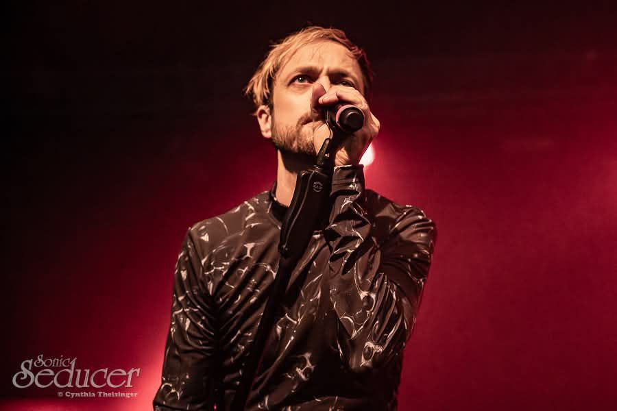
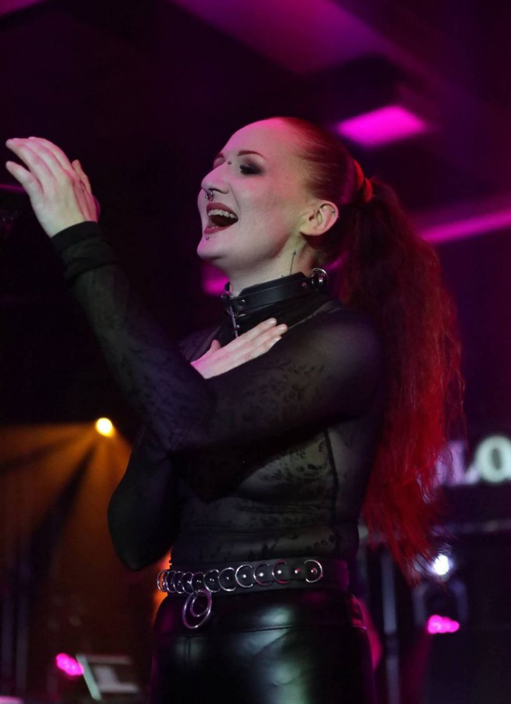
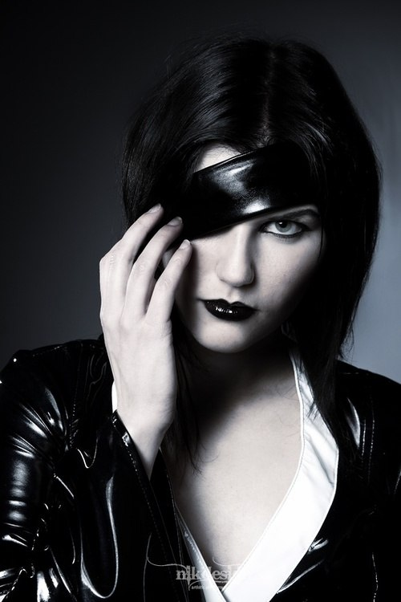
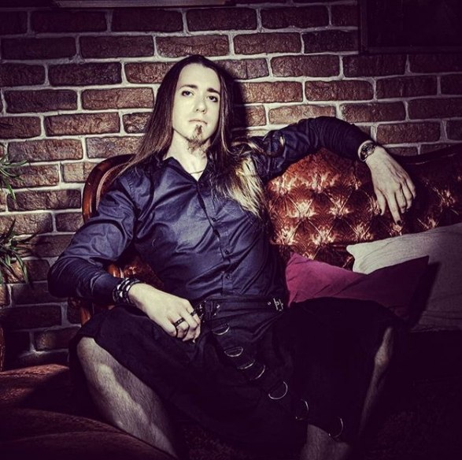
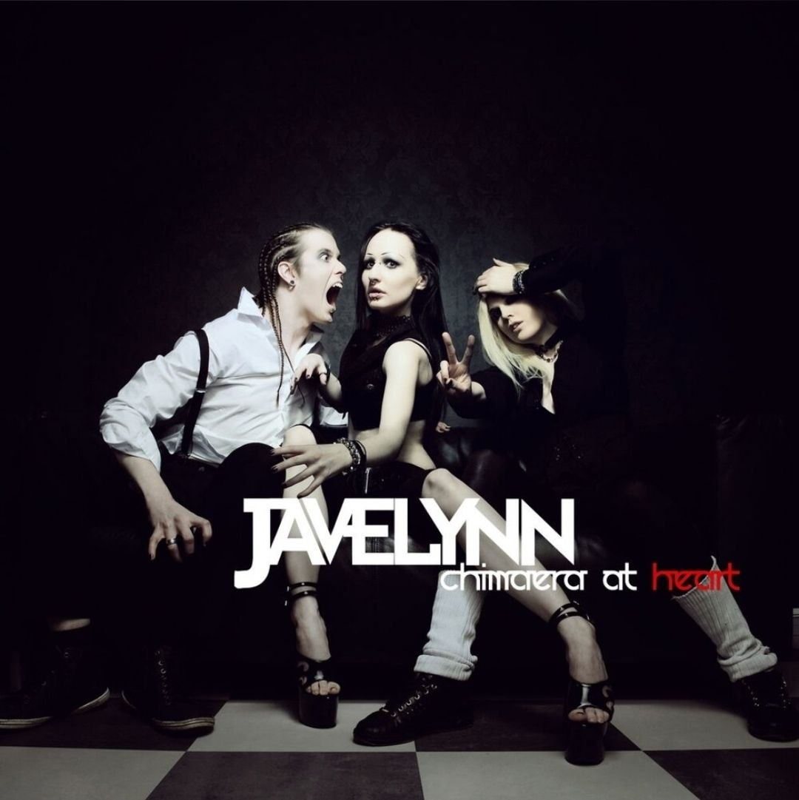
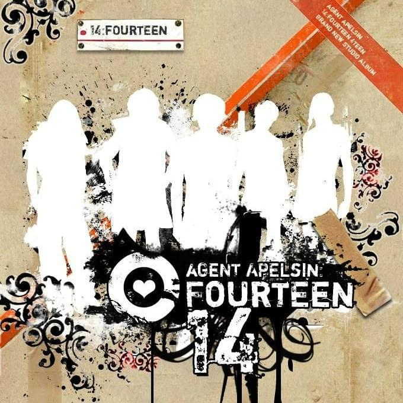
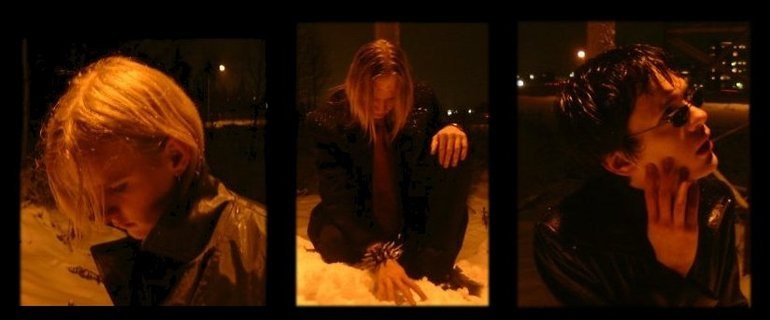

Проверь себя на знание группы "Ashbury Heights".
Читай вопросы и выбирай ответы внимательно.
По желанию поделись результатами опроса :)
Желаем наилучшего
Ashbury Heights — шведский электронный музыкальный дуэт из Сундсвалля, Медельпад, образованный в 2005 году. Первоначально в состав дуэта входили Андерс Хагстрём (вокал, автор песен, музыка и программирование) и Ясмин Улин (вокал). Улин покинула группу после выхода их EP «Morning Star in a Black Car» , и её заменила Кари Берг (вокал) в качестве ведущей вокалистки. Берг была участницей Ashbury Heights до 2010 года и приняла участие в записи одного альбома, «Take Cair Paramour» . В 2010 году, после длительногопопажопа спора между Хагстрёмом и лейблом Out of Line , группа распалась. Спор был урегулирован в 2011 году, после чего Хагстрём и Out of Line возобновили сотрудничество. В 2013 году к группе присоединилась Теа Ф. Тайм (вокал и тексты песен) в качестве новой вокалистки, ранее работавшая в сфере альтернативного моделирования и бурлеск-шоу (под сценическим псевдонимом Tea Time). После ухода Тайм в группу вернулась участница первого состава Ясмин Улин.





Javelynn — шведская музыкальная группа, основанная в ноябре 2008 года в Стокгольме бывшей вокалисткой дуэта Ashbury Heights Ясмин Улин. Коллектив исполняет музыку в жанрах синти-поп и электроклэш, сочетая мрачную лирику с энергичными электронными аранжировками. Читать далее...

Agent Apelsin — это локальный и недолговечный шведский музыкальный проект, существовавший в начале 2000-х годов. Он представлял огромный интерес фанатов, поскольку в проекте участвовал Андерс Хагстрём - будущий создатель культовой группы Ashbury Heights. Читать далее...

Necrotronic (название с греч. νεκρός — "мертвый" и от англ. "electronic" видимо выбрано ради атмосферы и дословно может значить "мертвая электроника") — шведская музыкальна группа, родом также из Сундвалля, появившаяся в 1997-1999 годах. Ранее коллектив ещё назывался Lovecide/Heartcide. На момент создания в его состав входили три человека: Prophet (Андерс Хагстрём), Diablo (Ола Олен) и God almigh-T (Йоаким Стен). Читать далее...